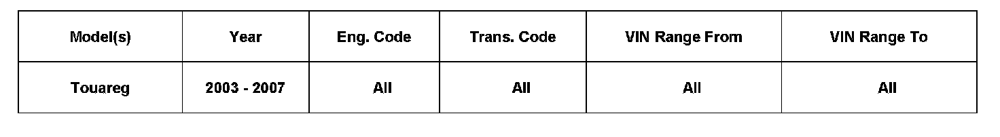

Wipers/Washers - Wiper Motor Sets Code 01305
92 07 04July 23, 2007
2015517

Vehicle Information
Condition
Windshield Wiper Motor, Sets DTC 01305 Infotainment Data Bus Faulty
DTC 01305 Infotainment Data Bus Faulty is logged in the windshield wiper motor.
Technical Background
In the vehicle electrical system there is a software fault on software 5003 with hardware 021 and software 5101 with hardware 022 which does not lead to malfunctions.
Production Solution
The fault is fixed with software versions 5201 and 5301.
Service
If only the wiper control unit has the above fault entry, it can be ignored, no further diagnosis is required. If other control units have this fault entry, it must be fixed.
Warranty
Information only.
Required Parts and Tools
No Special Parts required.
No Special Tools required.
Additional Information
All part and service references provided in this Technical Bulletin are subject to change and/or removal.
Always check with your Parts Dept. and Repair Manuals for the latest information.